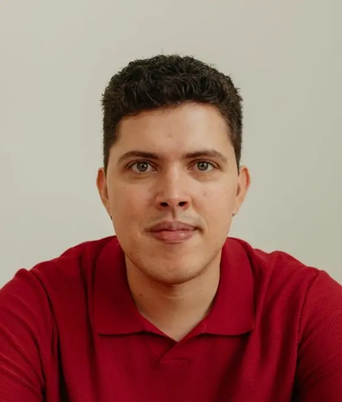

Para conduzir as conversas difíceis de um relacionamento com clareza e criatividade, do primeiro atendimento à alta.
Numa sessão com duas pessoas, há pelo menos três histórias: a de cada uma e a que se constrói entre elas. Este é um grupo de supervisão com começo, meio e fim, para pensar junto os casos de quem atende e aprender a escutar as três.
Pode ser o seu grupo se
- você é psicóloga ou psicólogo e atende, ou está começando a atender, casais e outros relacionamentos;
- você já saiu de uma sessão sem saber direito o que tinha acabado de acontecer entre aquelas pessoas;
- você atende há um tempo e sabe que revisar a base nunca é tempo perdido;
- você quer levar seus casos para um grupo pequeno, onde dá tempo de todo mundo falar;
- você desconfia de quem procura o culpado numa briga e quer aprender a escutar a terceira história.
Os cinco encontros
As primeiras sessões
O contrato e a pergunta sobre de quem você é terapeuta. Para que serve a avaliação: criar vínculo com cada pessoa, decidir se a terapia de relacionamento é indicada e juntar material para entender o caso. A sessão conjunta, as sessões individuais e o rastreio de violência.contratode quem você é terapeutaavaliaçãovínculo com cada umsessão conjuntasessões individuaisrastreio de violência
Formulação e devolutiva
Organizar o que se ouviu em torno de um tema: as diferenças, as sensibilidades de cada um, as circunstâncias de fora e o padrão que se repete entre as pessoas. E devolver isso de um jeito que faça sentido para quem é atendido. É aqui que se constrói, com elas, a terceira história.formulação DEEPtema centralpadrões de interaçãoforças da relaçãodevolutivaplano
Aceitação
Ajudar as pessoas a se aproximarem a partir do que dói: sair da raiva para o que está escondido embaixo dela e descrever junto um episódio difícil, sem procurar culpado. E a diferença entre aceitação e resignação.união empáticaemoção dura e emoção escondidadistanciamento unificadoaceitação não é resignação
Mudança e comunicação
Quando e como propor mudança sem entrar na briga sobre quem precisa mudar, e como notar as tentativas de mudança que já acontecem. Validar o que o outro sente e pensa, mesmo sem concordar.mudança deliberadaquem mudatentativas de mudançavalidação
Dificuldades comuns, alta e encerramento
Violência e os critérios para seguir ou não com o atendimento, segredos e infidelidade. E o fim: as possibilidades de alta, falar do fim desde o começo, a última sessão e o fechamento dos casos do grupo.violência e plano de segurançasegredosinfidelidadepossibilidades de altasessão finalfechamento dos casos
Como funciona
Ao vivo
Cinco sábados seguidos, de 8 de maio a 5 de junho de 2027, das 10h ao meio-dia, no Google Meet.
Um grupo de até 12 pessoas, para dar tempo de todo mundo falar.
Os casos
Os casos são os seus e os meus. Quem quiser leva um caso para o grupo pensar junto; quem não quiser, pensa junto do mesmo jeito.
Entre um sábado e outro, a conversa continua no grupo da turma.
Gravado
Perdeu um sábado ou quer rever? As gravações ficam com a turma.
Para voltar quando um caso pedir.

Quem conduz
Sou o Ilo, psicólogo e um curioso da vida e das relações humanas.
Me formei em psicologia na Universidade Federal do Ceará. Sou especialista em Terapia de Aceitação e Compromisso e tenho formação em Psicoterapia Analítica Funcional e em Terapia Comportamental Integrativa de Casais. Atendo pessoas e relacionamentos, casais e trisais, em Fortaleza e on-line, e faço supervisão clínica. Fundei o Instituto Fendas de Saúde, Cultura e Interseccionalidade.
Francisco Ilo Lima Filho, CRP 11/17085. franciscoilo.com · @fco.ilo
 supervisão
supervisão5 encontros
Supervisão em psicoterapia de relacionamentos
R$450
o seu nome aqui
Puxa uma cadeira
- Cinco encontros ao vivo, aos sábados, das 10h às 12h
- Um grupo de até 12 pessoas
- A gravação de todos os encontros
- O grupo da turma no WhatsApp
- Certificado de participação
Encontros de 8 de maio a 5 de junho de 2027. Inscrições de 17 de abril a 7 de maio.